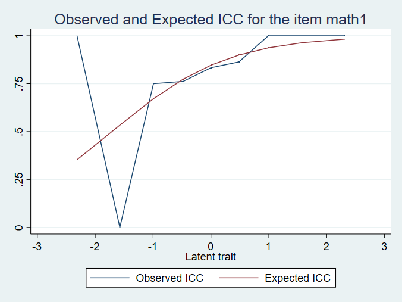
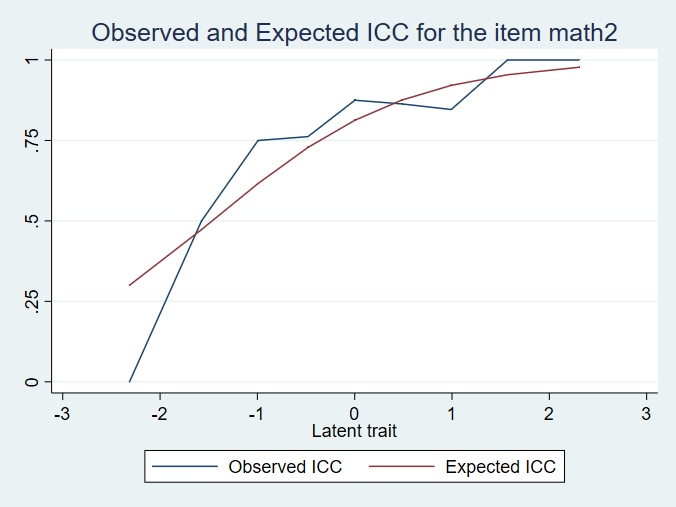
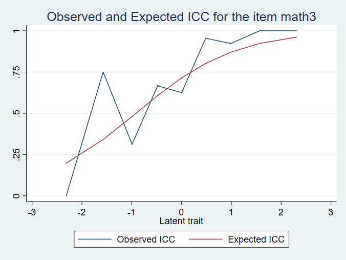
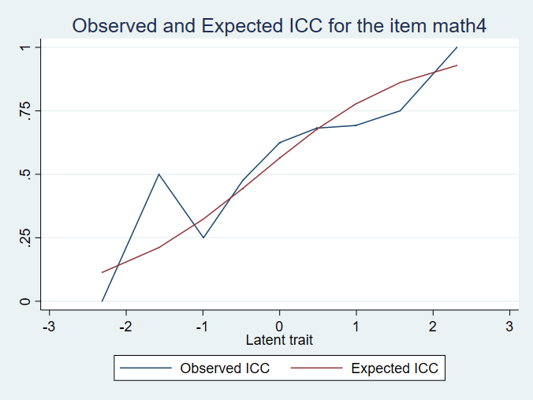
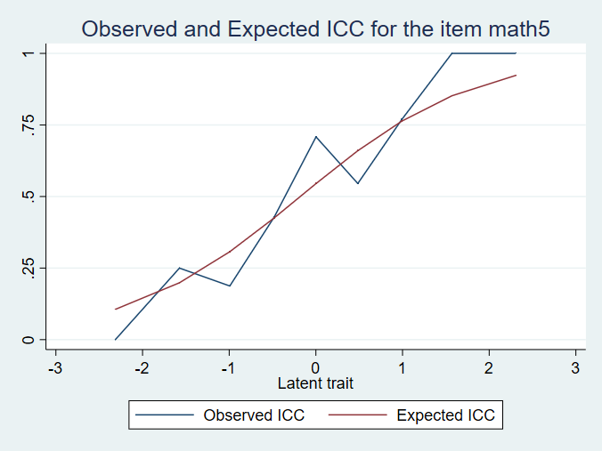
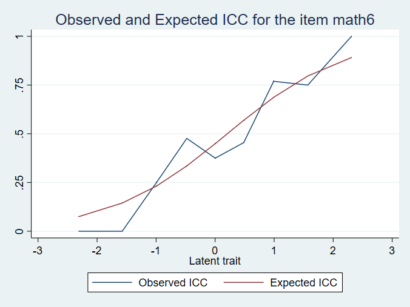
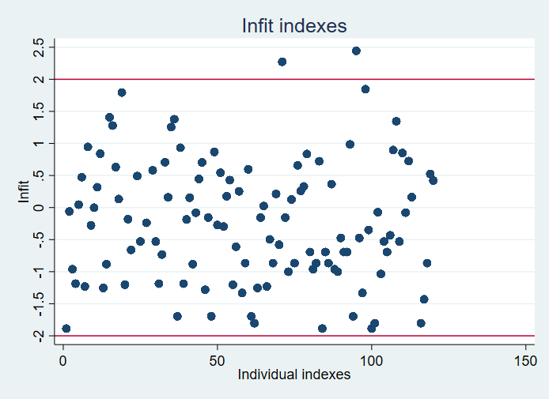
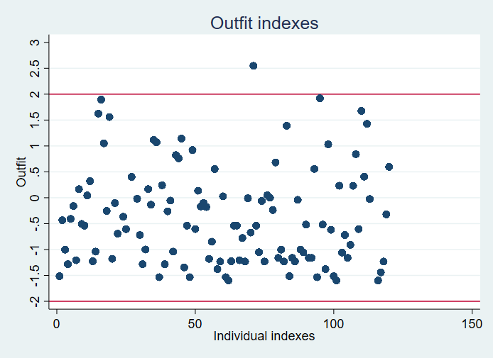
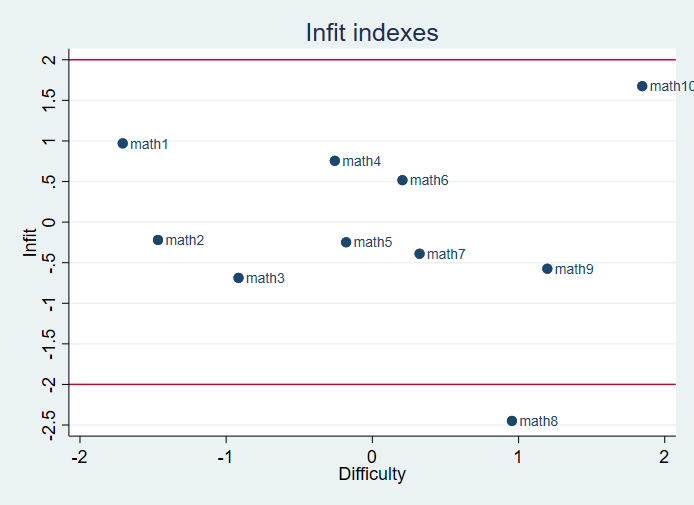
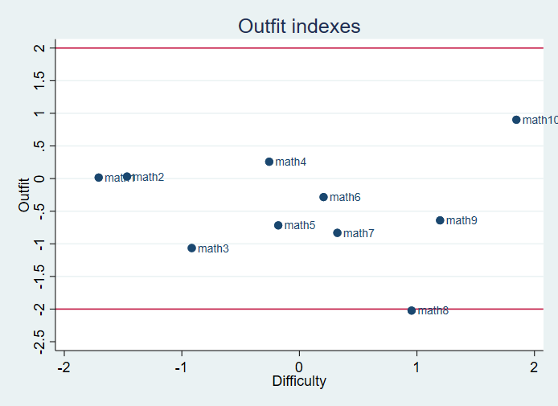

本篇文章中用到的很多代码来自这里: https://www.stata-journal.com/sjpdf.html?articlenum=st0119 , 英文好的朋友可以直接看这个文章就行。
另外, 这篇教程只是展示一下stata在IRT分析时能做什么, 并没有对IRT的相关知识进行介绍。 另外我们也没有对raschtest命令如何使用进行详细的结果, 所以这篇文章只需要花费10秒浏览一下即可。
安装
1 | ssc install raschtest |
输出(stream):
checking raschtest consistency and verifying not already installed... installing into c:\ado\plus\... installation complete.
checking raschtest consistency and verifying not already installed... installing into c:\ado\plus\... installation complete.
数据加载
前几篇文章都是用的这个数据, 不做介绍, 直接上命令:
1 | use http://www.stata.com/support/faqs/dta/raschfaq, clear |
1 | list in 1/10 |
输出(stream):
+-----------------------------------------------------------------------------------------------------------------------------+ | math1 math2 math3 math4 math5 math6 math7 math8 math9 math10 subj_id | |-----------------------------------------------------------------------------------------------------------------------------| 1. | correct correct correct incorrect incorrect incorrect incorrect incorrect incorrect incorrect 1 | 2. | correct correct incorrect incorrect correct correct correct incorrect incorrect incorrect 2 | 3. | correct correct incorrect incorrect correct incorrect incorrect incorrect incorrect incorrect 3 | 4. | correct correct correct incorrect correct incorrect correct incorrect incorrect incorrect 4 | 5. | correct correct correct incorrect incorrect correct correct correct incorrect incorrect 5 | |-----------------------------------------------------------------------------------------------------------------------------| 6. | correct correct correct incorrect correct incorrect incorrect correct correct incorrect 6 | 7. | correct correct correct incorrect incorrect correct incorrect incorrect incorrect incorrect 7 | 8. | correct correct correct incorrect correct correct incorrect correct correct correct 8 | 9. | correct correct correct incorrect correct correct correct incorrect correct incorrect 9 | 10. | correct correct correct correct correct incorrect incorrect correct correct incorrect 10 | +-----------------------------------------------------------------------------------------------------------------------------+
+-----------------------------------------------------------------------------------------------------------------------------+ | math1 math2 math3 math4 math5 math6 math7 math8 math9 math10 subj_id | |-----------------------------------------------------------------------------------------------------------------------------| 1. | correct correct correct incorrect incorrect incorrect incorrect incorrect incorrect incorrect 1 | 2. | correct correct incorrect incorrect correct correct correct incorrect incorrect incorrect 2 | 3. | correct correct incorrect incorrect correct incorrect incorrect incorrect incorrect incorrect 3 | 4. | correct correct correct incorrect correct incorrect correct incorrect incorrect incorrect 4 | 5. | correct correct correct incorrect incorrect correct correct correct incorrect incorrect 5 | |-----------------------------------------------------------------------------------------------------------------------------| 6. | correct correct correct incorrect correct incorrect incorrect correct correct incorrect 6 | 7. | correct correct correct incorrect incorrect correct incorrect incorrect incorrect incorrect 7 | 8. | correct correct correct incorrect correct correct incorrect correct correct correct 8 | 9. | correct correct correct incorrect correct correct correct incorrect correct incorrect 9 | 10. | correct correct correct correct correct incorrect incorrect correct correct incorrect 10 | +-----------------------------------------------------------------------------------------------------------------------------+
模型拟合
从输出结果中我们可以看到, 我们常用的拟合指标都已经列出, 包括infit/outfit, R1c 和 Andersen LR test等。
1 | raschtest math*, method(cml) mean id(subj_id) autogroup |
输出(stream):
Estimation method: Conditional maximum likelihood (CML) Number of items: 10 Number of groups: 4 (2 of them are used to compute the statistics of test) Number of individuals: 120 Number of individuals with missing values: 0 (removed) Number of individuals with nul or perfect score: 5 Conditional log-likelihood: -435.3507 Log-likelihood: -576.6596 Difficulty Standardized Items parameters std Err. R1c df p-value Outfit Infit U ----------------------------------------------------------------------------- math1 -1.70772 0.24144 0.308 1 0.5790 0.016 0.970 0.209 math2 -1.46646 0.22711 0.016 1 0.8988 0.031 -0.220 0.366 math3 -0.91556 0.20332 0.262 1 0.6085 -1.065 -0.687 -0.969 math4 -0.25695 0.19002 0.071 1 0.7893 0.258 0.755 0.939 math5 -0.17952 0.18948 0.340 1 0.5597 -0.717 -0.249 -0.180 math6 0.20572 0.18994 1.650 1 0.1989 -0.284 0.517 0.497 math7 0.32291 0.19111 0.821 1 0.3648 -0.832 -0.390 -0.553 math8 0.95453 0.20591 3.251 1 0.0714 -2.023 -2.449 -2.496 math9 1.19694 0.21547 0.439 1 0.5077 -0.641 -0.574 -0.773 math10 1.84612 0.25220 1.696 1 0.1929 0.902 1.675 1.232 ----------------------------------------------------------------------------- R1c test R1c= 8.621 9 0.4730 Andersen LR test Z= 9.178 9 0.4210 ----------------------------------------------------------------------------- The mean of the difficulty parameters is fixed to 0 Ability Expected Group Score parameters std Err. Freq. Score ll -------------------------------------------------------------- 0 0 -3.625 1.608 3 0.42 -------------------------------------------------------------- 1 1 -2.314 0.999 5 1.29 -160.6491 2 -1.574 0.833 4 2.20 3 -0.993 0.759 16 3.12 4 -0.480 0.724 21 4.06 -------------------------------------------------------------- 2 5 0.002 0.713 24 5.00 -270.1128 6 0.484 0.723 22 5.94 7 0.992 0.757 13 6.87 8 1.570 0.832 4 7.80 9 2.310 0.999 6 8.71 -------------------------------------------------------------- 3 10 3.628 1.612 2 9.58 --------------------------------------------------------------
Estimation method: Conditional maximum likelihood (CML) Number of items: 10 Number of groups: 4 (2 of them are used to compute the statistics of test) Number of individuals: 120 Number of individuals with missing values: 0 (removed) Number of individuals with nul or perfect score: 5 Conditional log-likelihood: -435.3507 Log-likelihood: -576.6596 Difficulty Standardized Items parameters std Err. R1c df p-value Outfit Infit U ----------------------------------------------------------------------------- math1 -1.70772 0.24144 0.308 1 0.5790 0.016 0.970 0.209 math2 -1.46646 0.22711 0.016 1 0.8988 0.031 -0.220 0.366 math3 -0.91556 0.20332 0.262 1 0.6085 -1.065 -0.687 -0.969 math4 -0.25695 0.19002 0.071 1 0.7893 0.258 0.755 0.939 math5 -0.17952 0.18948 0.340 1 0.5597 -0.717 -0.249 -0.180 math6 0.20572 0.18994 1.650 1 0.1989 -0.284 0.517 0.497 math7 0.32291 0.19111 0.821 1 0.3648 -0.832 -0.390 -0.553 math8 0.95453 0.20591 3.251 1 0.0714 -2.023 -2.449 -2.496 math9 1.19694 0.21547 0.439 1 0.5077 -0.641 -0.574 -0.773 math10 1.84612 0.25220 1.696 1 0.1929 0.902 1.675 1.232 ----------------------------------------------------------------------------- R1c test R1c= 8.621 9 0.4730 Andersen LR test Z= 9.178 9 0.4210 ----------------------------------------------------------------------------- The mean of the difficulty parameters is fixed to 0 Ability Expected Group Score parameters std Err. Freq. Score ll -------------------------------------------------------------- 0 0 -3.625 1.608 3 0.42 -------------------------------------------------------------- 1 1 -2.314 0.999 5 1.29 -160.6491 2 -1.574 0.833 4 2.20 3 -0.993 0.759 16 3.12 4 -0.480 0.724 21 4.06 -------------------------------------------------------------- 2 5 0.002 0.713 24 5.00 -270.1128 6 0.484 0.723 22 5.94 7 0.992 0.757 13 6.87 8 1.570 0.832 4 7.80 9 2.310 0.999 6 8.71 -------------------------------------------------------------- 3 10 3.628 1.612 2 9.58 --------------------------------------------------------------
绘图
如果你想要同时生成各种图, 你可以这么写:
1 | raschtest math*, method(cml) mean autogroup icc information graph fitgraph id(subj_id) |
输出(stream):
Estimation method: Conditional maximum likelihood (CML) Number of items: 10 Number of groups: 4 (2 of them are used to compute the statistics of test) Number of individuals: 120 Number of individuals with missing values: 0 (removed) Number of individuals with nul or perfect score: 5 Conditional log-likelihood: -435.3507 Log-likelihood: -576.6596 Difficulty Standardized Items parameters std Err. R1c df p-value Outfit Infit U ----------------------------------------------------------------------------- math1 -1.70772 0.24144 0.308 1 0.5790 0.016 0.970 0.209 math2 -1.46646 0.22711 0.016 1 0.8988 0.031 -0.220 0.366 math3 -0.91556 0.20332 0.262 1 0.6085 -1.065 -0.687 -0.969 math4 -0.25695 0.19002 0.071 1 0.7893 0.258 0.755 0.939 math5 -0.17952 0.18948 0.340 1 0.5597 -0.717 -0.249 -0.180 math6 0.20572 0.18994 1.650 1 0.1989 -0.284 0.517 0.497 math7 0.32291 0.19111 0.821 1 0.3648 -0.832 -0.390 -0.553 math8 0.95453 0.20591 3.251 1 0.0714 -2.023 -2.449 -2.496 math9 1.19694 0.21547 0.439 1 0.5077 -0.641 -0.574 -0.773 math10 1.84612 0.25220 1.696 1 0.1929 0.902 1.675 1.232 ----------------------------------------------------------------------------- R1c test R1c= 8.621 9 0.4730 Andersen LR test Z= 9.178 9 0.4210 ----------------------------------------------------------------------------- The mean of the difficulty parameters is fixed to 0 Ability Expected Group Score parameters std Err. Freq. Score ll -------------------------------------------------------------- 0 0 -3.625 1.608 3 0.42 -------------------------------------------------------------- 1 1 -2.314 0.999 5 1.29 -160.6491 2 -1.574 0.833 4 2.20 3 -0.993 0.759 16 3.12 4 -0.480 0.724 21 4.06 -------------------------------------------------------------- 2 5 0.002 0.713 24 5.00 -270.1128 6 0.484 0.723 22 5.94 7 0.992 0.757 13 6.87 8 1.570 0.832 4 7.80 9 2.310 0.999 6 8.71 -------------------------------------------------------------- 3 10 3.628 1.612 2 9.58 --------------------------------------------------------------


Estimation method: Conditional maximum likelihood (CML) Number of items: 10 Number of groups: 4 (2 of them are used to compute the statistics of test) Number of individuals: 120 Number of individuals with missing values: 0 (removed) Number of individuals with nul or perfect score: 5 Conditional log-likelihood: -435.3507 Log-likelihood: -576.6596 Difficulty Standardized Items parameters std Err. R1c df p-value Outfit Infit U ----------------------------------------------------------------------------- math1 -1.70772 0.24144 0.308 1 0.5790 0.016 0.970 0.209 math2 -1.46646 0.22711 0.016 1 0.8988 0.031 -0.220 0.366 math3 -0.91556 0.20332 0.262 1 0.6085 -1.065 -0.687 -0.969 math4 -0.25695 0.19002 0.071 1 0.7893 0.258 0.755 0.939 math5 -0.17952 0.18948 0.340 1 0.5597 -0.717 -0.249 -0.180 math6 0.20572 0.18994 1.650 1 0.1989 -0.284 0.517 0.497 math7 0.32291 0.19111 0.821 1 0.3648 -0.832 -0.390 -0.553 math8 0.95453 0.20591 3.251 1 0.0714 -2.023 -2.449 -2.496 math9 1.19694 0.21547 0.439 1 0.5077 -0.641 -0.574 -0.773 math10 1.84612 0.25220 1.696 1 0.1929 0.902 1.675 1.232 ----------------------------------------------------------------------------- R1c test R1c= 8.621 9 0.4730 Andersen LR test Z= 9.178 9 0.4210 ----------------------------------------------------------------------------- The mean of the difficulty parameters is fixed to 0 Ability Expected Group Score parameters std Err. Freq. Score ll -------------------------------------------------------------- 0 0 -3.625 1.608 3 0.42 -------------------------------------------------------------- 1 1 -2.314 0.999 5 1.29 -160.6491 2 -1.574 0.833 4 2.20 3 -0.993 0.759 16 3.12 4 -0.480 0.724 21 4.06 -------------------------------------------------------------- 2 5 0.002 0.713 24 5.00 -270.1128 6 0.484 0.723 22 5.94 7 0.992 0.757 13 6.87 8 1.570 0.832 4 7.80 9 2.310 0.999 6 8.71 -------------------------------------------------------------- 3 10 3.628 1.612 2 9.58 --------------------------------------------------------------
- 首先是10个题目的拟合的和实际的iCC曲线






省略其他ICC….
- infit outfit分布散点图


- 题目的infit和outfititem分布:


总结
这篇教程只是展示一下stata在IRT分析时能做什么, 并没有对IRT的相关知识进行介绍。目前来看, raschtest命令的功能还比较有限, 如果想要用到stata还需要自己对IRT理论模型有更深的理解才行, 相对于conquest/winsteps等软件, raschtest还不太适合小白用户的使用。
注意
本文由jupyter notebook转换而来, 您可以在这里下载notebook
有问题可以直接在下方留言
或者给我发邮件675495787[at]qq.com
请记住我的网址: mlln.cn 或者 jupyter.cn